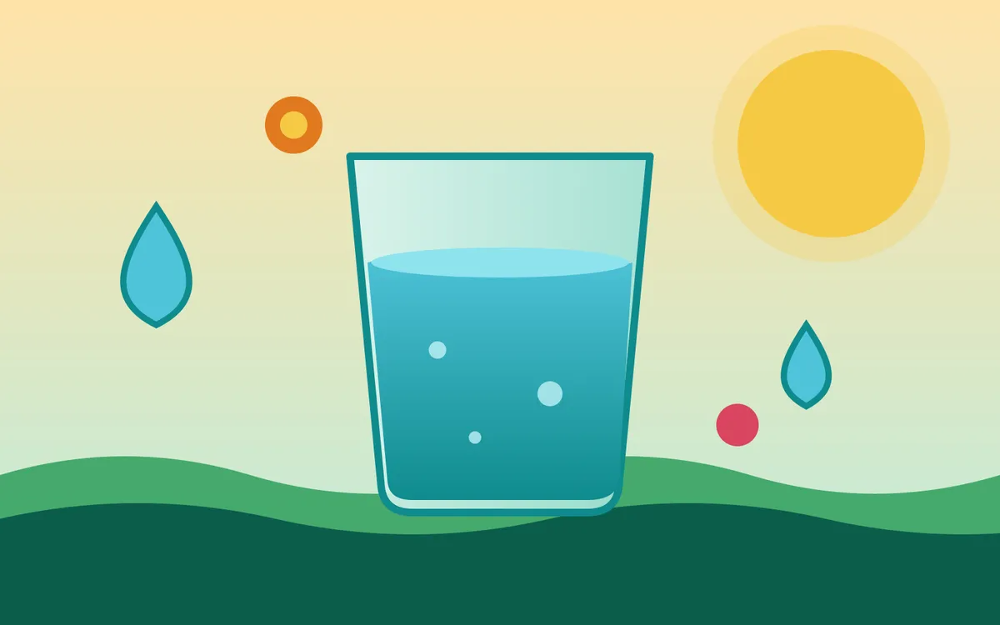

पानी पीने की सही आदतें: दिन भर में कितना और कैसे पिएँ?
Healthy Water-Drinking Habits: How Much and How to Drink Through the Day
शरीर को हर दिन कितने पानी की ज़रूरत होती है, डिहाइड्रेशन के लक्षण क्या हैं और रोज़ की ज़िंदगी में पानी पीने की आसान आदतें कैसे बनाएँ, जानिए सरल भाषा में।
Learn in simple language how much water your body needs each day, the signs of dehydration, and easy habits that make it simple to drink enough water in daily life.

पानी हमारे शरीर के लिए सबसे ज़रूरी चीज़ों में से एक है। यह शरीर का तापमान संतुलित रखने, खाना पचाने, पोषक तत्वों को पहुँचाने और गंदगी बाहर निकालने में मदद करता है। फिर भी बहुत से लोग व्यस्तता में दिन भर पर्याप्त पानी नहीं पी पाते।
दिन भर में कितना पानी ज़रूरी है?
इसका कोई एक पक्का जवाब सबके लिए नहीं है। पानी की ज़रूरत उम्र, वज़न, मौसम, शारीरिक मेहनत और सेहत के हिसाब से बदलती है। आम तौर पर स्वस्थ वयस्कों के लिए दिन भर में लगभग 2 से 3 लीटर कुल तरल का अंदाज़ा बताया जाता है। इसमें सादा पानी के साथ दाल-सब्ज़ी, फल, छाछ, नारियल पानी और चाय जैसी चीज़ों का पानी भी गिना जाता है।
शरीर में पानी की कमी के लक्षण
ज़्यादा प्यास लगना और मुँह या होंठ सूखना
पेशाब का रंग गहरा पीला होना और मात्रा कम होना
सिरदर्द, थकान या चक्कर जैसा महसूस होना
ध्यान लगाने में दिक्कत और चिड़चिड़ापन
कब्ज़ या त्वचा का रूखा होना
एक आसान संकेत पेशाब का रंग है। हल्का पीला (भूसे जैसा) रंग आम तौर पर ठीक माना जाता है, जबकि गहरा पीला रंग बताता है कि पानी बढ़ाने की ज़रूरत हो सकती है। कुछ विटामिन या दवाएँ भी रंग बदल सकती हैं, इसलिए इसे सिर्फ़ मोटा संकेत मानिए।
पानी पीने की 7 आसान आदतें
सुबह उठकर एक गिलास पानी पिएँ।
पानी की बोतल हमेशा अपने पास या काम की मेज़ पर रखें, ताकि नज़र पड़ते ही याद आए।
एक साथ बहुत सारा पानी गटकने की जगह थोड़ा-थोड़ा करके पूरे दिन में पिएँ।
खाने के साथ और खाने के बीच छोटे घूँट लें; ज़्यादा ठंडा या बहुत गुनगुना, जो आपको सही लगे वही चुनें।
फोन में अलार्म या रिमाइंडर लगाएँ, खासकर अगर आपको प्यास कम लगती है।
बाहर निकलते समय, सफ़र में और व्यायाम के दौरान पानी साथ रखें।
मीठे कोल्ड ड्रिंक और पैकेट वाले जूस की जगह सादा पानी, नींबू पानी, छाछ या नारियल पानी चुनें।
गर्मी, व्यायाम और बीमारी में क्या करें?
तेज़ गर्मी या व्यायाम में पसीने के साथ पानी और नमक दोनों निकलते हैं। ऐसे में थोड़ा-थोड़ा पानी, छाछ, नींबू-पानी या ओआरएस घोल लेना मददगार हो सकता है। बुखार, उल्टी या दस्त के समय भी तरल पदार्थ बढ़ाने की ज़रूरत पड़ती है, लेकिन अगर तकलीफ़ बढ़े तो डॉक्टर से मिलें।
किन लोगों को सावधानी रखनी चाहिए?
अगर किसी को किडनी, दिल या लिवर की बीमारी है, या डॉक्टर ने तरल पदार्थ सीमित करने को कहा है, तो अपनी मर्ज़ी से ज़्यादा पानी न पिएँ। ऐसे लोगों के लिए पानी की मात्रा डॉक्टर तय करते हैं। बहुत कम समय में बहुत ज़्यादा पानी पी लेना भी शरीर में नमक का संतुलन बिगाड़ सकता है, इसलिए संतुलन ज़रूरी है।
अक्सर पूछे जाने वाले सवाल
क्या चाय-कॉफ़ी का पानी भी गिना जाता है?
हाँ, चाय और कॉफ़ी में भी पानी होता है और वह कुल तरल में गिना जा सकता है। पर इन्हें ज़्यादा मात्रा में न पिएँ और सादा पानी को मुख्य स्रोत बनाए रखें।
क्या खाने के साथ पानी पीना बुरा है?
आम तौर पर खाने के साथ छोटे घूँट में पानी पीना ठीक माना जाता है। बहुत ज़्यादा पानी एक साथ पीने से पेट भारी लग सकता है, इसलिए थोड़ा-थोड़ा लें।
क्या सिर्फ़ प्यास लगने पर पानी पीना काफ़ी है?
ज़्यादातर स्वस्थ लोगों के लिए प्यास एक अच्छा संकेत है। पर बुज़ुर्गों, बच्चों और मेहनत या तेज़ गर्मी में काम करने वालों को प्यास का इंतज़ार किए बिना बीच-बीच में पानी पीना चाहिए।
Water is one of the most essential things for our body. It helps regulate body temperature, digest food, carry nutrients and flush out waste. Yet many people, caught up in a busy day, do not drink enough water.
How much water do you need in a day?
There is no single exact answer for everyone. Water needs change with age, weight, weather, physical effort and health. For healthy adults, a rough estimate often quoted is about 2 to 3 litres of total fluids a day. This counts plain water as well as the water in dal, vegetables, fruit, buttermilk, coconut water and even tea.
Signs your body needs more water
Increased thirst and a dry mouth or lips
Dark yellow urine and passing less of it
Headache, tiredness or feeling dizzy
Trouble concentrating and irritability
Constipation or dry skin
An easy clue is the colour of your urine. Pale yellow (straw-like) is usually considered fine, while dark yellow suggests you may need more fluids. Some vitamins and medicines can change the colour too, so treat it only as a rough signal.
7 easy water-drinking habits
Drink a glass of water soon after waking up.
Keep a water bottle with you or on your work desk so you are reminded whenever you see it.
Instead of gulping a lot at once, drink small amounts through the day.
Take small sips with and between meals; choose cold or lukewarm, whichever suits you.
Set a phone alarm or reminder, especially if you do not feel thirsty often.
Carry water when you go out, travel or exercise.
Choose plain water, lemon water, buttermilk or coconut water over sweet fizzy drinks and packaged juices.
What to do in heat, exercise and illness
In intense heat or exercise, you lose both water and salts through sweat. Taking small amounts of water, buttermilk, lemon water or ORS solution can help. During fever, vomiting or diarrhoea you also need more fluids, but see a doctor if the problem gets worse.
Who should be careful?
If someone has kidney, heart or liver disease, or a doctor has asked them to limit fluids, they should not drink extra water on their own. For such people the amount of water is decided by their doctor. Drinking a very large amount in a short time can also upset the body's salt balance, so balance matters.
Frequently Asked Questions
Does the water in tea or coffee count?
Yes, tea and coffee also contain water and can count towards your total fluids. But do not drink them in large amounts, and keep plain water as your main source.
Is it bad to drink water with meals?
Taking small sips of water with meals is generally considered fine. Drinking a lot at once can make the stomach feel heavy, so take it little by little.
Is it enough to drink water only when I feel thirsty?
For most healthy people thirst is a good signal. But older adults, children and people working hard or in intense heat should drink water at intervals without waiting for thirst.
यह जानकारी सिर्फ शैक्षिक उद्देश्य से है, किसी भी इलाज से पहले डॉक्टर से सलाह लें।
This information is for educational purposes only. Please consult a doctor before any treatment.